Our Mission
Field-tested dairy intelligence
Trust in Every Drop.
DudhAmrut connects farm collection, cold chain, and retail quality through verified monitoring, traceability, and operational decision support from source to consumer.
Traceable milk
Quality assurance
Real-time signals
Adulteration risk reduction
quality assurance
Real-time visibility
cold-chain monitoring
Traceability at every step
compliance & recall
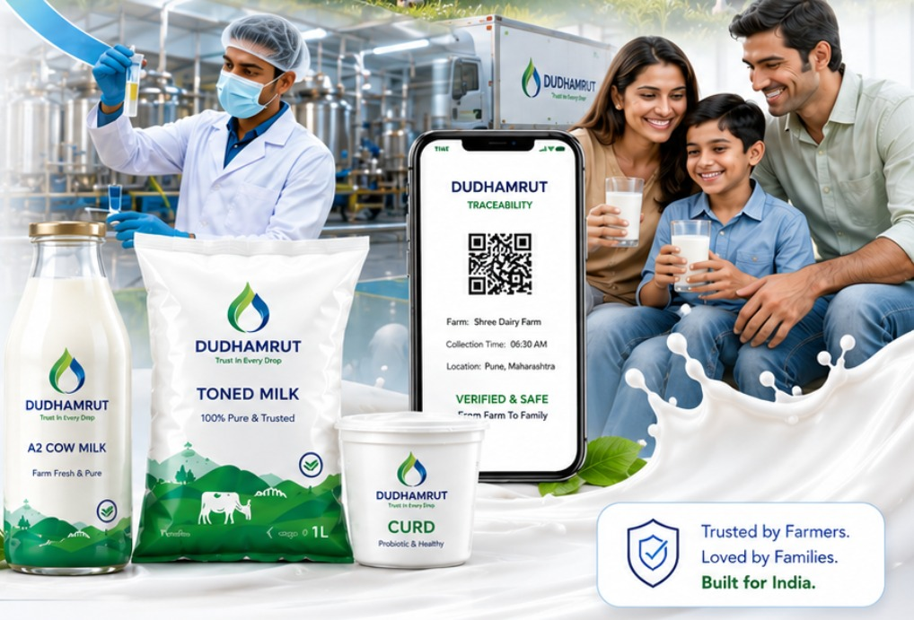
Quality signalLive deployment
Built with field context
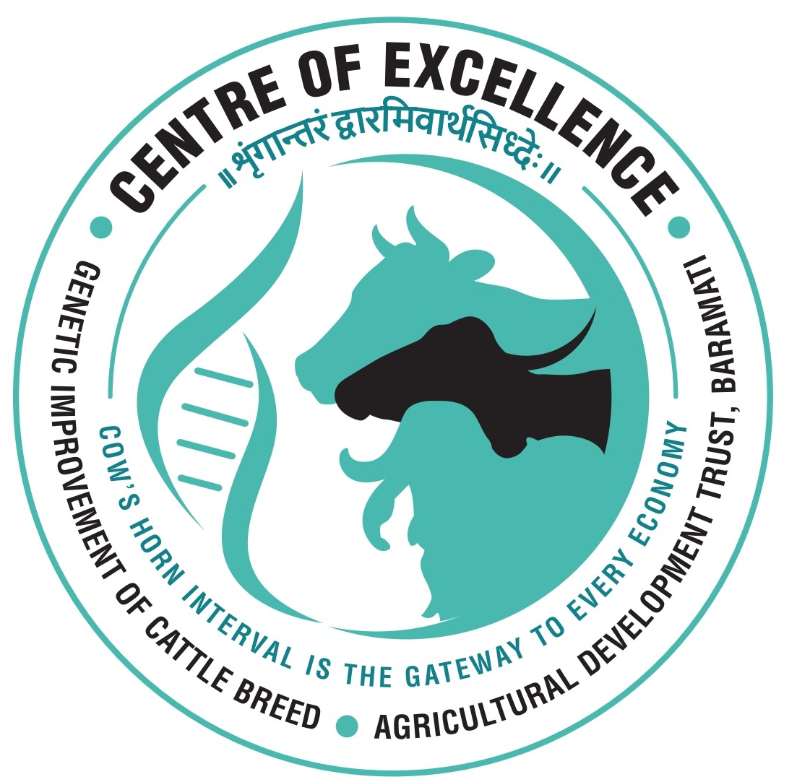


The dairy quality crisis
The Problem We Solve
India produces 23% of global milk, yet faces critical issues that threaten public health and farmer livelihoods. Tap any node to explore how each breaks the chain.
Dairy Supply Chain
Rampant Adulteration
Tap a node to explore the issue
Solution
DudhAmrut connects every stage of the milk journey with real-time quality monitoring, traceability, and intelligent decision-making.
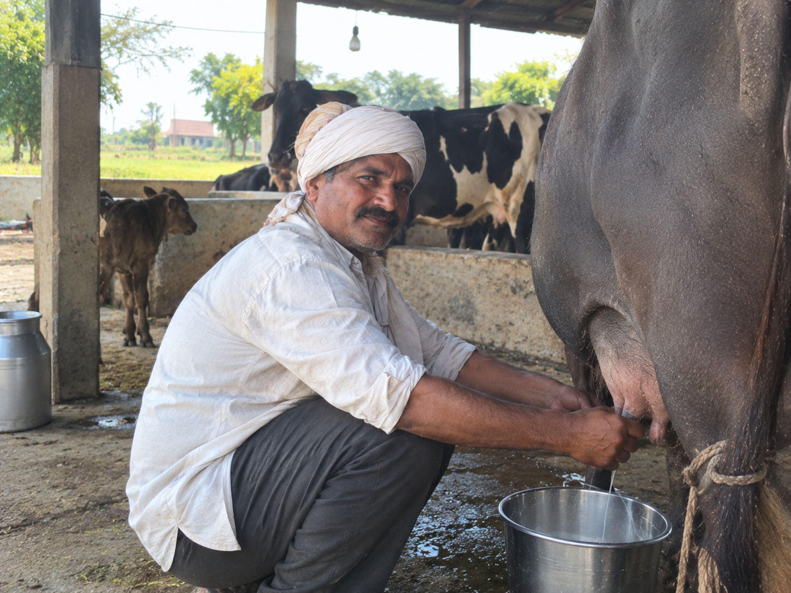
01
Farm-Level Milk Production
SOLUTION
Ensures productivity, quality, and traceability at the
source of milk production.

02
Milk Collection Center
SOLUTION
Centralizes collection points for disciplined,
transparent, and efficient milk intake.

03
Milk Collection & Testing Workflow
SOLUTION
Combines collection, sampling, and testing into one
streamlined workflow.
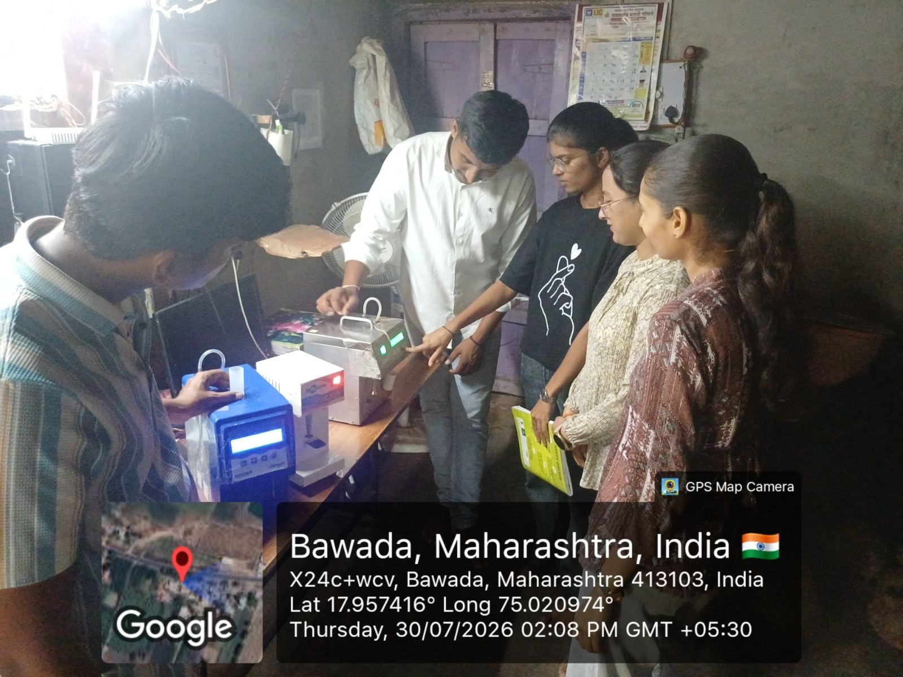
04
On-Site Quality Testing
SOLUTION
Verifies animal health, purity, and milk quality at
the point of collection.

05
Digital Milk Analyzer
SOLUTION
Measures critical milk parameters in real time for
faster, smarter decisions.
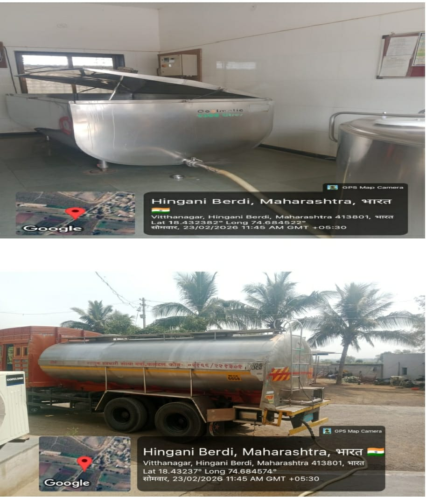
06
Milk Transportation
SOLUTION
Secures movement of milk while maintaining cold-chain
integrity and accountability.
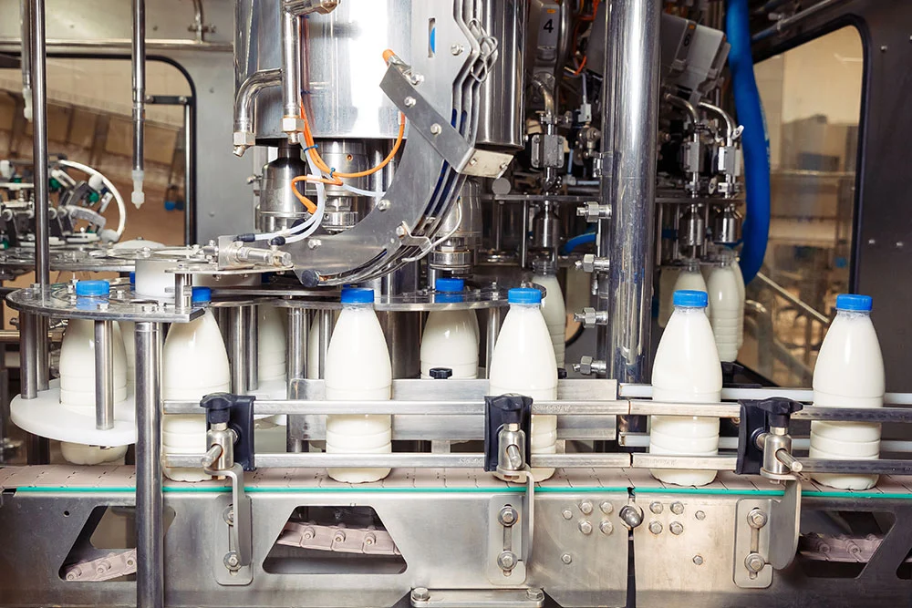
07
Dairy Processing Unit
SOLUTION
Transforms raw milk into a consistent, trusted, and
high-quality dairy product stream.
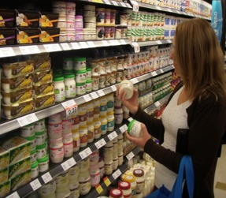
08
DudhAmrut Traceability & Consumer Trust
SOLUTION
Delivers transparent farm-to-retail visibility that
builds confidence and loyalty.
01
Farm-Level Milk Production
SOLUTION
Ensures productivity, quality, and traceability at the
source of milk production.
02
Milk Collection Center
SOLUTION
Centralizes collection points for disciplined,
transparent, and efficient milk intake.
03
Milk Collection & Testing Workflow
SOLUTION
Combines collection, sampling, and testing into one
streamlined workflow.
04
On-Site Quality Testing
SOLUTION
Verifies animal health, purity, and milk quality at
the point of collection.
05
Digital Milk Analyzer
SOLUTION
Measures critical milk parameters in real time for
faster, smarter decisions.
06
Milk Transportation
SOLUTION
Secures movement of milk while maintaining cold-chain
integrity and accountability.
07
Dairy Processing Unit
SOLUTION
Transforms raw milk into a consistent, trusted, and
high-quality dairy product stream.
08
DudhAmrut Traceability & Consumer Trust
SOLUTION
Delivers transparent farm-to-retail visibility that
builds confidence and loyalty.
Mission & Vision
Building a More Trusted Dairy Ecosystem
Technology that connects quality, transparency and intelligence across the dairy value chain.
Our Vision
A dairy ecosystem where every drop can be trusted.
Our principles
Purity
Objective milk-quality intelligence from collection to processing.
- SNF % & FAT %
- pH & Temperature
- Conductivity & Density
- Adulteration Indicators
- Freshness Time Logging
Trust
Reliable records and traceability across the dairy supply chain.
- Immutable Blockchain Storage
- Consumer QR Verification
- Farmer ID Validation
- Tamper-Proof Quality Records
- Traceable Batch ID
Innovation
Connected technologies designed for intelligent dairy operations.
- Real-Time IoT Sensors
- Decentralized Blockchain Integration
- AI Anomaly Detection
- Cloud Analytics Dashboard
- Modular & Scalable Design
Sustainability
Technology focused on reducing operational losses and improving dairy-system efficiency.
- ~80% Spoilage Reduction
- Low-Power IoT Devices
- Reusable Sensor Probes
- +40% Farmer Income Growth
- Alignment with SDG 3, 8 & 12
Purer milk • Greater transparency • Smarter
dairy operations
Key Features
Our platform integrates cutting-edge technologies to deliver unparalleled quality and transparency.
Real-time Quality Monitoring
Measures temperature, pH, and purity.
Blockchain Data Security
Immutable records for every milk batch.
QR-Based Consumer Transparency
Scan to view the verified journey.
Farmer Authentication
Verifies sources for accountability.
Automated Spoilage Alerts
Instant notifications to reduce wastage.
FSSAI Compliance Dashboard
Real-time compliance reporting.
Cloud Analytics
Enables data-driven optimization.
AI Predictions
Predicts potential spoilage.
System Architecture
A high-level overview of our data flow, from farm to consumer.
1. Data Collection
IoT sensors test milk & farmer data is collected.
2. Secure Gateway
Data is sent to the cloud for processing & analysis.
3. Blockchain Storage
Verified data is stored immutably on the Blockchain.
4. Consumer Access
Consumers scan a QR code to see the full, trusted report.
Validation / evidence
Built around the realities of dairy operations.
DudhAmrut's development is grounded in field visits, testing, prototype work, and conversations with the dairy ecosystem. These images document the work behind the platform.
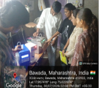
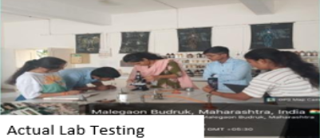
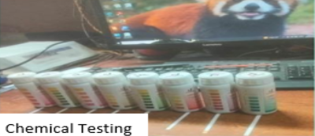


Platform architecture
End-to-End Dairy Supply Chain
Seven integrated modules connecting milk collection, quality, operations, logistics, distribution, and consumer traceability on one unified platform.
01 — Farmer Portal
Empowering farmers with digital milk collection, transparent payments, livestock records, and AI-enabled insights.
Explore Module02 — Collection Centre
Digitizing milk procurement with farmer identification, automated quality testing, and real-time data synchronization.
Explore Module03 — Storage & Quality
Protecting milk quality through connected cold-chain monitoring, spoilage alerts, and compliance visibility.
Explore Module04 — Processing Unit
Managing production batches with digital traceability, yield monitoring, and QR-enabled product identification.
Explore Module05 — Transport & Logistics
Maintaining cold-chain visibility from processing to delivery through connected logistics monitoring.
Explore Module06 — Distributor & Retail
Enabling smarter inventory operations with batch-level visibility, expiry control, and sales intelligence.
Explore Module07 — Consumer Traceability
Giving consumers direct access to verified product information through a simple, transparent digital experience.
Explore ModuleCommand Layer — Admin Command Center
A unified control layer providing end-to-end visibility across the dairy ecosystem.
Measurable Impact
Our system delivers tangible benefits, enhancing safety, empowering farmers, and reducing waste.
0
Dairy Operators Engaged
0
Maharashtra Districts Covered
0
Pilot Sites with LOIs
0
Farmers & Consumers Reached
0
Live Operational Data Stored
0
Integrated Platform Modules
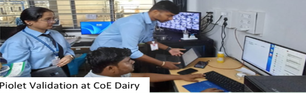
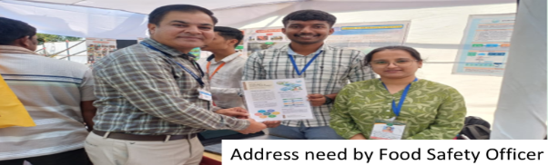
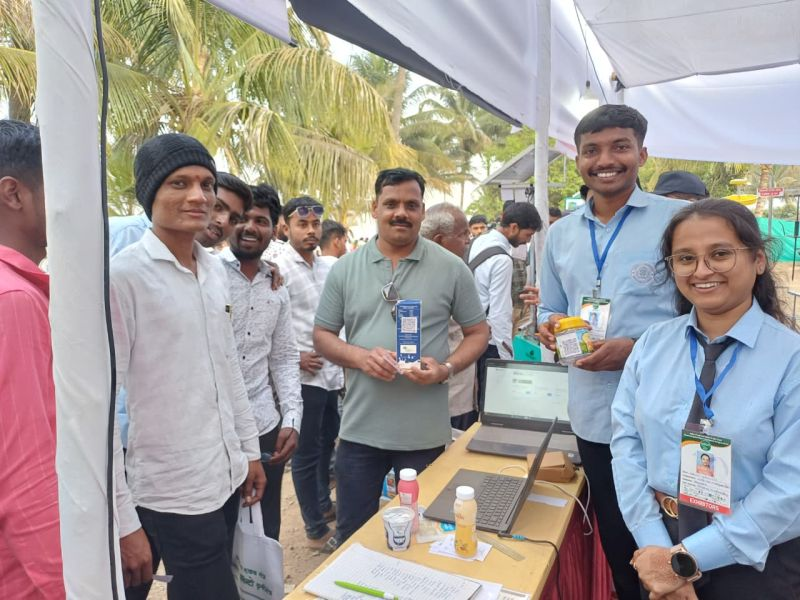
Our Journey
From Field Insight to Dairy Innovation
A focused timeline of the milestones that shaped DudhAmrut.

01
COE Dairy Visit
An important early field exposure that helped our team understand real-world dairy operations, milk handling, quality monitoring, and practical challenges within the dairy ecosystem.

02
Avishkar — University Level
DudhAmrut progressed through the University Level of Avishkar, marking an important milestone in the project’s research and innovation journey.
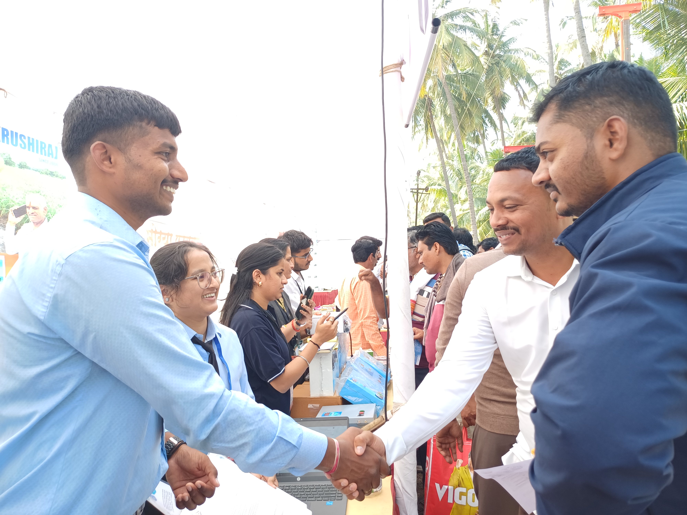
03
KVK Exhibition — 8 Days
Over eight days, the team showcased DudhAmrut, interacted with visitors, gathered feedback, and gained valuable real-world exposure.
Over 8 days, the team showcased DudhAmrut at Krushak 2026, Baramati, where we interacted with over 260 dairies from more than 20 districts across Maharashtra.
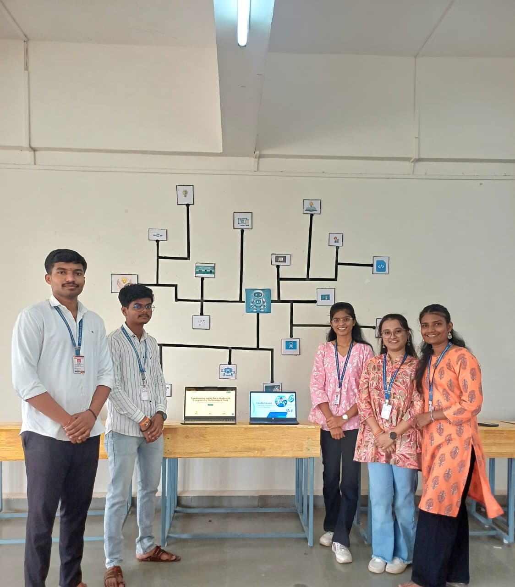
04
🏆 1st Prize — Project Competition
CRETECHNOVA 2K26
DudhAmrut achieved 1st Prize in the National-Level Project Competition held at our college.
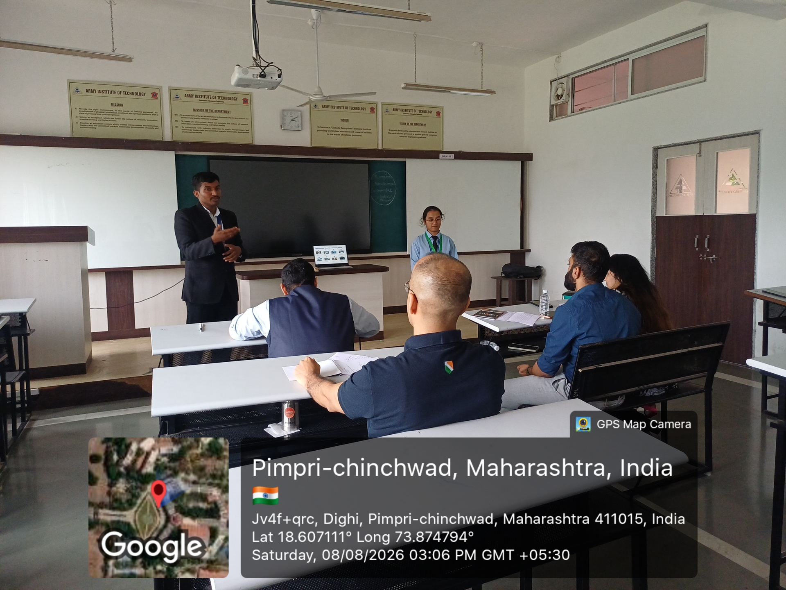
05
🏆 2nd Prize — Case Competition
Chapters — E-Cell IIT Bombay at AIT Pune
DudhAmrut secured 2nd Prize in the Case Competition at the Chapters event organized by E-Cell IIT Bombay at Army Institute of Technology, Pune.
Research & SDG Alignment
Our project is grounded in research and aligned with global sustainable development goals.
SDG 3: Good Health
Ensuring safe, unadulterated milk for consumer well-being.
SDG 8: Decent Work
Promoting fair pricing and economic growth for farmers.
SDG 12: Responsible Consumption
Reducing spoilage and creating a sustainable supply chain.
FSSAI Validation
System built to meet and exceed FSSAI quality standards.
Market context
Designed for dairy realities across Maharashtra.
DudhAmrut is rooted in the dairy ecosystem around Malegaon and Baramati, with field activity and engagement extending across Maharashtra.
20+ Maharashtra districts referenced in the existing
project impact data.
260+ dairy operators engaged through the documented field
journey.
A connected data layer for collection, testing, processing,
transport, and consumer trust.

Business Model
Hardware Opens the Door. Software Creates the Revenue.
A recurring-revenue model combining dairy SaaS subscriptions, collection-centre subscriptions, IoT-enabled monitoring, and regulatory compliance services.
Dairy Platform
₹75K – ₹1.5L
/ month
For mid-scale dairies managing 50–200 collection centers
- All 8 modules included
- Unlimited collection centers
- Quality + Operations + Traceability + Analytics
MCC Subscription
₹1,500
/ MCC / month
For standalone milk collection centers
- Digital collection records
- Quality monitoring
- Farmer payment system
IoT Monitoring
₹3,000
one-time device
+ ₹1,500 / month
+ ₹1,500 / month
Connected monitoring for dairy equipment and environments
- Sensor integration
- Temperature monitoring
- Equipment interfacing
Compliance Module
₹20,000
/ month
For digital FSSAI FoSCoS recall and compliance workflows
- Batch recall reporting
- Audit documentation
- FoSCoS integration
Hardware Adoption→SaaS Subscription→Operational Intelligence→Recurring Revenue
Investor-ready solution
A practical platform to improve milk safety, compliance, and trust.
DudhAmrut is built to help dairy operators reduce risk, improve traceability, and create measurable accountability across the value chain.
Operational visibility
24/7
Real-time
Continuous quality and cold-chain monitoring across the dairy network.
Traceable
batch lineage
Compliant
process assurance
The Team
Built by people who live the problem. Our co-founder runs an actual milk collection center — DudhAmrut was not built from a case study.
Shubham Salunke
Founder & Team Lead
Product vision · System architecture · AI & full-stack development · Research leadership
Dhiraj Gaikwad
Platform Development & Finance
Runs Rugved Dairy Farm, Bawada · Backend development · Real-world operational testing
Sakshi Bhosale
Product Development & Market Research
User research · Product workflow design · Documentation & validation
Pratiksha Mane
Business & Stakeholder Engagement
Market validation · Stakeholder coordination · Ecosystem outreach
Shital Yadav
Operations & Quality Validation
Testing & QA · Workflow validation · Data management
Dr. Neeta Doshi
Strategic Mentor
4 Patents · Technology commercialization · Innovation & research leadership
Validated & Supported By
Centre of Excellence
in Dairy, Baramati
Atal Incubation Center
ADT Baramati
KVK Krushik 2026
National Agri Exhibition
SVPM College
of Engineering, Malegaon